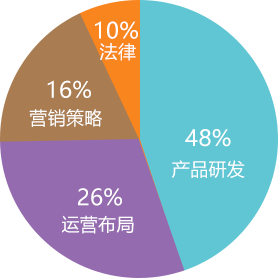

Mitech是基于区块链的物联网开源系统，能解决现有物联网上的一些隐私、安全和兼容上的缺陷，达到安全地存储来自采集器的数据，并在分类账上进行验证。在未来，我们将实现智能化识别、定位、跟踪、监控和管理的一种低成本、隐私保护的安全网络，拥有自己数据的网络系统。
我们的核心技术
1. 通信:MI采用P2P技术来组织各个网络节点，每个节点通过多播实现路由、新节点识别和数据传播等功能，智能识别到数据信息并完成传感需求
2. 存储:MI数据在运行期以块链式数据结构存储在内存中，最终会持久化存储到数据库中。对于较大的文件，也可存储在链外的文件系统里，同时将摘要(数字指纹)保存到链上用以自证
3. 安全机制:MI系统通过多种密码学原理进行数据加密及隐私保护。完全超越其他涉及到金融应用的区块链系统，高强度高可靠的安全算法达到国密级别，在效率上世界领先
4. 共识机制:在MI系统中各个节点达成一致的策略和方法，根据系统类型及应用场景的不同灵活选取。PBFT该共识机制允许拜占庭容错。该共识机制允许强监管节点参与，具备权限分级能力，性能更高，耗能更低
代币结构
代币总量：999,990,000
天使轮：200,000,000，锁仓1年，每季度线形释放，已完成
私募：99,990,000
私募比例：1ETH=16666MIT
软 顶：2500ETH
硬 顶：5000ETH
代币格式：ERC20
私募时间：2018年6月15日20:00-2018年6月22日20:00，令牌销售前2天或售出30%的代币之前（两者其先为准），我们将向首批投资者提供10%的奖励。
资金用途

48% 产品研发
26% 运营布局
16% 营销策略
10% 法律
©2017 MITECH | 保留所有权利